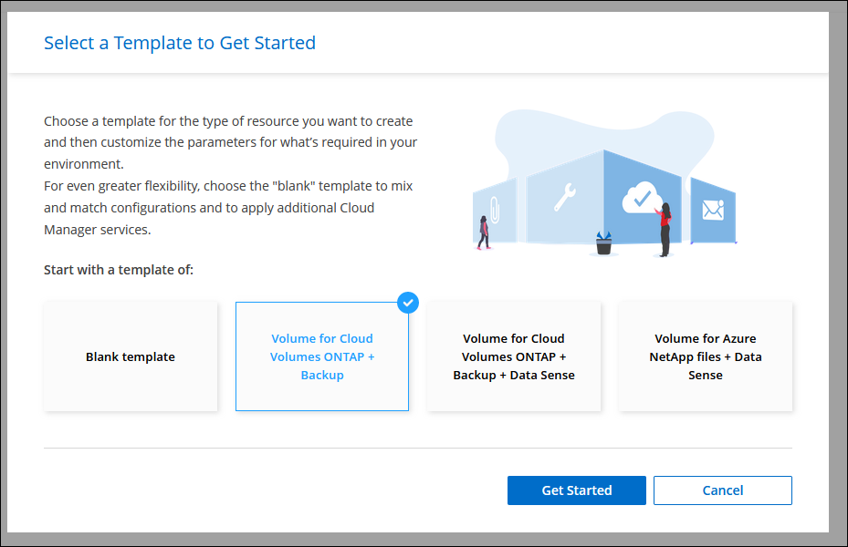
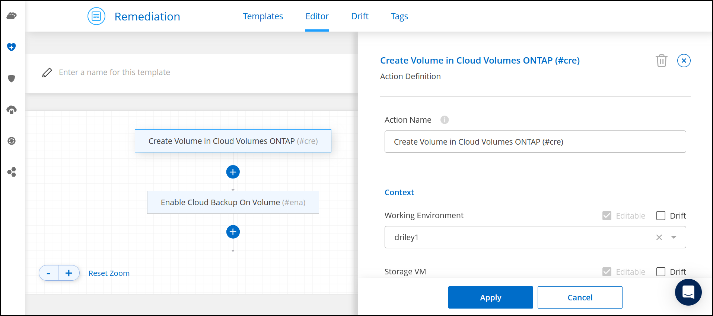

Amazon Web Services
Amazon Web Services
 Google Cloud
Google Cloud
 Microsoft Azure
Microsoft Azure
 Request doc changes
Request doc changes Edit this page
Edit this page Learn how to contribute
Learn how to contributeCreate FlexVol volumes
Contributors
If you need more storage after you launch your initial Cloud Volumes ONTAP system, you can create new FlexVol volumes for NFS, CIFS, or iSCSI from Cloud Manager.
Cloud Manager provides several ways to create a new volume:
-
Specify details for a new volume and let Cloud Manager handle the underlying data aggregates for you. Learn more.
-
Create a volume on a data aggregate of your choice. Learn more.
-
Create volume from a template to optimize the volume for the workload requirements for certain applications, such as databases or streaming services. Learn more.
-
Create a volume on the second node in an HA configuration. Learn more.
Before you get started
A few notes about volume provisioning:
-
When you create an iSCSI volume, Cloud Manager automatically creates a LUN for you. We’ve made it simple by creating just one LUN per volume, so there’s no management involved. After you create the volume, use the IQN to connect to the LUN from your hosts.
-
You can create additional LUNs from System Manager or the CLI.
-
If you want to use CIFS in AWS, you must have set up DNS and Active Directory. For details, see Networking requirements for Cloud Volumes ONTAP for AWS.
-
If your Cloud Volumes ONTAP configuration supports the Amazon EBS Elastic Volumes feature, you might want to learn more about what happens when you create a volume.
Create a volume
The most common way to create a volume is to specify the type of volume that you need and then Cloud Manager handles the disk allocation for you. But you also have the option to choose the specific aggregate on which you want to create the volume.
-
On the Canvas page, double-click the name of the Cloud Volumes ONTAP system on which you want to provision a FlexVol volume.
-
Create a new volume by letting Cloud Manager handle the disk allocation for you, or choose a specific aggregate for the volume.
Choosing a specific aggregate is recommended only if you have a good understanding of the data aggregates on your Cloud Volumes ONTAP system.
Any aggregateIn the Volumes tab, click Add Volume > New volume.
Specific aggregate-
Click the menu icon, and then click Advanced > Advanced allocation.
-
Click the menu for an aggregate.
-
Click Create volume.
-
-
Follow the steps in the wizard to create the volume.
-
Details, Protection, and Tags: Enter basic details about the volume and select a Snapshot policy.
Some of the fields on this page are self-explanatory. The following list describes fields for which you might need guidance:
Field Description Volume Size
The maximum size that you can enter largely depends on whether you enable thin provisioning, which enables you to create a volume that is bigger than the physical storage currently available to it.
Tags
Tags that you add to a volume are associated with the Application Templates service, which can help you organize and simplify the management of your resources.
Snapshot Policy
A Snapshot copy policy specifies the frequency and number of automatically created NetApp Snapshot copies. A NetApp Snapshot copy is a point-in-time file system image that has no performance impact and requires minimal storage. You can choose the default policy or none. You might choose none for transient data: for example, tempdb for Microsoft SQL Server.
-
Protocol: Choose a protocol for the volume (NFS, CIFS, or iSCSI) and then provide the required information.
If you select CIFS and a server isn’t set up, Cloud Manager prompts you to set up CIFS connectivity after you click Next.
The following sections describe fields for which you might need guidance. The descriptions are organized by protocol.
NFS- Access control
-
Choose a custom export policy to make the volume available to clients.
- Export policy
-
Defines the clients in the subnet that can access the volume. By default, Cloud Manager enters a value that provides access to all instances in the subnet.
CIFS- Permissions and users/groups
-
Enables you to control the level of access to an SMB share for users and groups (also called access control lists or ACLs). You can specify local or domain Windows users or groups, or UNIX users or groups. If you specify a domain Windows user name, you must include the user’s domain using the format domain\username.
- DNS Primary and Secondary IP Address
-
The IP addresses of the DNS servers that provide name resolution for the CIFS server. The listed DNS servers must contain the service location records (SRV) needed to locate the Active Directory LDAP servers and domain controllers for the domain that the CIFS server will join.
If you’re configuring Google Managed Active Directory, AD can be accessed by default with the 169.254.169.254 IP address.
- Active Directory Domain to join
-
The FQDN of the Active Directory (AD) domain that you want the CIFS server to join.
- Credentials authorized to join the domain
-
The name and password of a Windows account with sufficient privileges to add computers to the specified Organizational Unit (OU) within the AD domain.
- CIFS server NetBIOS name
-
A CIFS server name that is unique in the AD domain.
- Organizational Unit
-
The organizational unit within the AD domain to associate with the CIFS server. The default is CN=Computers.
-
To configure AWS Managed Microsoft AD as the AD server for Cloud Volumes ONTAP, enter OU=Computers,OU=corp in this field.
-
To configure Azure AD Domain Services as the AD server for Cloud Volumes ONTAP, enter OU=AADDC Computers or OU=AADDC Users in this field.
Azure Documentation: Create an Organizational Unit (OU) in an Azure AD Domain Services managed domain -
To configure Google Managed Microsoft AD as the AD server for Cloud Volumes ONTAP, enter OU=Computers,OU=Cloud in this field.
Google Cloud Documentation: Organizational Units in Google Managed Microsoft AD
-
- DNS Domain
-
The DNS domain for the Cloud Volumes ONTAP storage virtual machine (SVM). In most cases, the domain is the same as the AD domain.
- NTP Server
-
Select Use Active Directory Domain to configure an NTP server using the Active Directory DNS. If you need to configure an NTP server using a different address, then you should use the API. See the Cloud Manager automation docs for details.
Note that you can configure an NTP server only when creating a CIFS server. It’s not configurable after you create the CIFS server.
iSCSI- LUN
-
iSCSI storage targets are called LUNs (logical units) and are presented to hosts as standard block devices. When you create an iSCSI volume, Cloud Manager automatically creates a LUN for you. We’ve made it simple by creating just one LUN per volume, so there’s no management involved. After you create the volume, use the IQN to connect to the LUN from your hosts.
- Initiator group
-
Initiator groups (igroups) specify which hosts can access specified LUNs on the storage system
- Host initiator (IQN)
-
iSCSI targets connect to the network through standard Ethernet network adapters (NICs), TCP offload engine (TOE) cards with software initiators, converged network adapters (CNAs) or dedicated host bust adapters (HBAs) and are identified by iSCSI qualified names (IQNs).
-
Disk Type: Choose an underlying disk type for the volume based on your performance needs and cost requirements.
-
Usage Profile & Tiering Policy: Choose whether to enable or disable storage efficiency features on the volume and then select a volume tiering policy.
ONTAP includes several storage efficiency features that can reduce the total amount of storage that you need. NetApp storage efficiency features provide the following benefits:
- Thin provisioning
-
Presents more logical storage to hosts or users than you actually have in your physical storage pool. Instead of preallocating storage space, storage space is allocated dynamically to each volume as data is written.
- Deduplication
-
Improves efficiency by locating identical blocks of data and replacing them with references to a single shared block. This technique reduces storage capacity requirements by eliminating redundant blocks of data that reside in the same volume.
- Compression
-
Reduces the physical capacity required to store data by compressing data within a volume on primary, secondary, and archive storage.
-
Review: Review details about the volume and then click Add.
-
Cloud Manager creates the volume on the Cloud Volumes ONTAP system.
Create a volume from a template
If your organization has created Cloud Volumes ONTAP volume templates so you can deploy volumes that are optimized for the workload requirements for certain applications, follow the steps in this section.
The template should make your job easier because certain volume parameters will already be defined in the template, such as disk type, size, protocol, snapshot policy, cloud provider, and more. When a parameter is already predefined, you can just skip to the next volume parameter.

|
You can only create NFS or CIFS volumes when using templates. |
-
On the Canvas page, click the name of the Cloud Volumes ONTAP system on which you want to provision a volume.
-
Click
 > Add Volume From Template.
> Add Volume From Template.
-
In the Select Template page, select the template that you want to use to create the volume and click Next.

The Define Parameters page is displayed.

You can click the checkbox Show read-only parameters to show all the fields that have been locked by the template if you want to see the values for those parameters. By default these predefined fields are hidden and only the fields you need to complete are shown. -
In the Context area, the Working Environment is filled in with the name of the working environment you started with. You need to select the Storage VM where the volume will be created.
-
Add values for all of the parameters that are not hard-coded from the template. See Create a volume for details about all the parameters you need to complete to deploy a Cloud Volumes ONTAP volume.
-
If there are no other Actions that you need to define (for example, configuring Cloud Backup), click Run Template.
If there are other actions, click the action in the left pane to display the parameters you need to complete.

For example, if the Enable Cloud Backup action requires that you select a backup policy, you can do that now.
-
Click Run Template.
Cloud Volumes ONTAP provisions the volume and displays a page so that you can see the progress.

Additionally, if any secondary action is implemented in the template, for example, enabling Cloud Backup on the volume, that action is also performed.
Create a volume on the second node in an HA configuration
By default, Cloud Manager creates volumes on the first node in an HA configuration. If you need an active-active configuration, in which both nodes serve data to clients, you must create aggregates and volumes on the second node.
-
On the Canvas page, double-click the name of the Cloud Volumes ONTAP working environment on which you want to manage aggregates.
-
Click the menu icon and then click Advanced > Advanced allocation.
-
Click Add Aggregate and then create the aggregate.
-
For Home Node, choose the second node in the HA pair.
-
After Cloud Manager creates the aggregate, select it and then click Create volume.
-
Enter details for the new volume, and then click Create.
Cloud Manager creates the volume on the second node in the HA pair.

|
For HA pairs deployed in multiple AWS Availability Zones, you must mount the volume to clients by using the floating IP address of the node on which the volume resides. |
After you create a volume
If you provisioned a CIFS share, give users or groups permissions to the files and folders and verify that those users can access the share and create a file.
If you want to apply quotas to volumes, you must use System Manager or the CLI. Quotas enable you to restrict or track the disk space and number of files used by a user, group, or qtree.